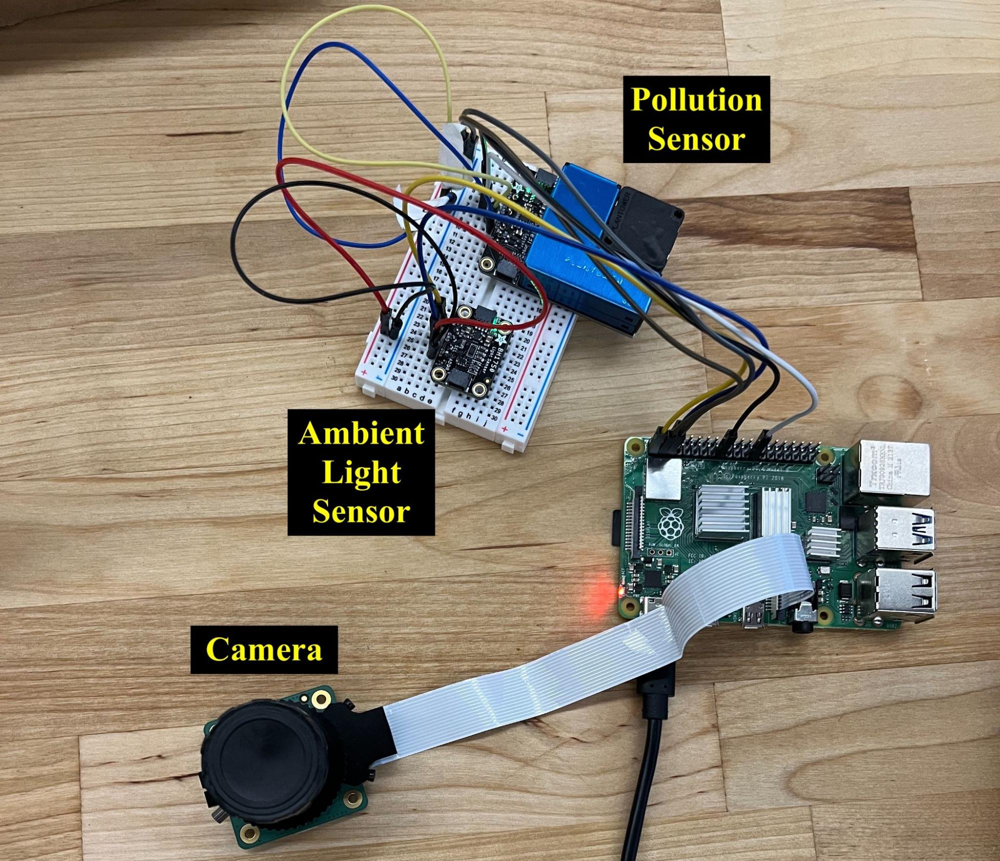

Color of Light and Pollution
A University of San Francisco Computer Science Senior Final Project
Motivation
Due to the frequency of wildfires and pollution, air quality is a massive concern for the general population, leading many to turn to several sites for AQI updates on their location, especially when the air is visibly murky. This project's purpose is to serve as a visualization of the color of light based on pollution, synthesizing data we gathered through our sensors and publicly available on the web into graphics illustrating the effect pollution has on our skies.
Specs
Hardware
Raspberry Pi 4b | Adafruit Air Quality Breakout Sensor | Adafruit Light Sensor | Adafruit Raspberry Pi HQ Camera
A Raspberry Pi 4 model B runs all of our hardware components, which were selected to work specifically with this model of Raspberry Pi. Here is how each component is connected and operated:
- Pollution Sensor
- The pollution sensor is the blue box at the top of the bread board. It connects over via I2C wired connection. There are four connections: ground, power, data and clock. The ground and power complete the circuit that powers the system. The clock connection ensures that the sensor operation is synchronized with the raspberry pi and the data connection allows the sensor and raspberry pi to send information back and forth. I2C connections can be multiplexed – which essentially means that multiple components can be operated through the same data and clock connections. The pollution and ambient light sensors share a multiplexed connection to the pi.
- Ambient Light Sensor
- The ambient light sensor is connected to the pi and operated the same as the pollution sensor.
- Camera
- The camera is connected to the pi via a ribbon connector (the wide, tape-looking thing). It is actually made by the raspberry pi foundation and doesn’t require any special software. A picture can be taken using the raspistill command
An image of our hardware setup (without the enclosure box):

Software
Our software and scripts can all be found on our Github.
- Web Scraper
- The web scraper collects data from Weather.com on the city of choice, and saves it in a CSV. It's written in Java and mainly makes use of the Jsoup library to parse and traverse the requested webpage HTML.
- Sensor Script
- Our sensor script is an incredibly simple script in CircuitPython that calls the relevant methods for the sensors to capture data and store it as a CSV.
- Database
- Our database is a PostgreSQL database that runs on the AWS cloud. It updates with data collected from the pi setup daily at midnight.
- Animation
- The animation seen on our Timelapse page runs on P5.js, and creates a visual display of the most relevant points of data our project has collected.
Data Analysis
explanation of the data analysis process, what was analyzed, meaningful or not conclusions
Terminology
- AQI: Air quality index. A composite score of five different pollutants that grades how healthy the air is. For more information on how AQI is rated, see this website.
- PM1/2.5/10.. etc: Particulate matter smaller than the specified number of microns.
- I2C: inter-integrated circuit
- AWS: Amazon Web Services.
Team
Sponsored By: Sean Olson
Professor: Doug Halperin
Hardware Build: Anthony Licea, Dunham McBride
Software Build: Alina Xia, Anthony Licea, Dunham McBride
Web Backend & Database: Heidi Shimek, Alina Xia
Web Design: Alina Xia
Data Analysis: Dunham McBride
Project Organization: Heidi Shimek